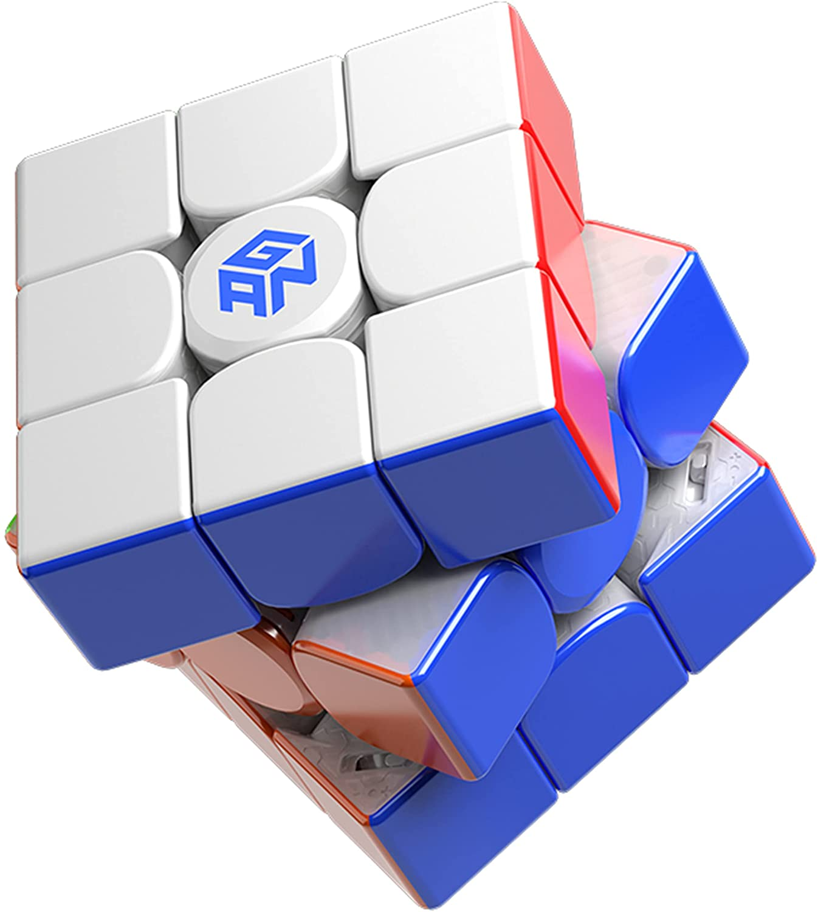

Credit to Wikipedia, for not letting me copy all of this
The Rubik's Cube is a 3-D combination puzzle originally invented in 1974 by Hungarian sculptor and professor of architecture Ernő Rubik. Originally called the Magic Cube, the puzzle was licensed by Rubik to be sold by Ideal Toy Corp in 1980 via businessman Tibor Laczi and Seven Towns founder Tom Kremer. The cube was released internationally in 1980 and became one of the most recognized icons in popular culture. It won the 1980 German Game of the Year special award for Best Puzzle. As of January 2009, 350 million cubes had been sold worldwide, making it the world's bestselling puzzle game and bestselling toy.
On the original classic Rubik's Cube, each of the six faces was covered by nine stickers, each of one of six solid colours: white, red, blue, orange, green, and yellow. Some later versions of the cube have been updated to use coloured plastic panels instead, which prevents peeling and fading. In models as of 1988, white is opposite yellow, blue is opposite green, and orange is opposite red, and the red, white, and blue are arranged in that order in a clockwise arrangement. On early cubes, the position of the colours varied from cube to cube. An internal pivot mechanism enables each face to turn independently, thus mixing up the colours. For the puzzle to be solved, each face must be returned to have only one colour. Similar puzzles have now been produced with various numbers of sides, dimensions, and stickers, not all of them by Rubik.
Although the Rubik's Cube reached its height of mainstream popularity in the 1980s, it is still widely known and used. Many speedcubers continue to practice it and similar puzzles; they also compete for the fastest times in various categories. Since 2003, the World Cube Association, the international governing body of the Rubik's Cube, has organised competitions worldwide and recognises world records.
On March 1970, Larry D. Nichols invented a 2×2×2 "Puzzle with Pieces Rotatable in Groups" and filed a Canadian patent application for it. Nichols's cube was held together by magnets. Nichols was granted U.S. Patent 3,655,201 on 11 April 1972, two years before Rubik invented his Cube.
On 9 April 1970, Frank Fox applied to patent an "amusement device", a type of sliding puzzle on a spherical surface with "at least two 3×3 arrays" intended to be used for the game of noughts and crosses. He received his UK patent (1344259) on 16 January 1974.
In the mid-1970s, Ernő Rubik worked at the Department of Interior Design at the Academy of Applied Arts and Crafts in Budapest. Although it is widely reported that the Cube was built as a teaching tool to help his students understand 3D objects, his actual purpose was solving the structural problem of moving the parts independently without the entire mechanism falling apart. He did not realise that he had created a puzzle until the first time he scrambled his new Cube and then tried to restore it. Rubik applied for a patent in Hungary for his "Magic Cube" (Bűvös kocka in Hungarian) on 30 January 1975, and HU170062 was granted later that year.
The first test batches of the Magic Cube were produced in late 1977 and released in Budapest toy shops. Magic Cube was held together with interlocking plastic pieces that prevented the puzzle being easily pulled apart, unlike the magnets in Nichols's design. With Ernő Rubik's permission, businessman Tibor Laczi took a Cube to Germany's Nuremberg Toy Fair in February 1979 in an attempt to popularise it. It was noticed by Seven Towns founder Tom Kremer, and they signed a deal with Ideal Toys in September 1979 to release the Magic Cube worldwide. Ideal wanted at least a recognisable name to trademark; that arrangement put Rubik in the spotlight because the Magic Cube was renamed after its inventor in 1980. The puzzle made its international debut at the toy fairs of London, Paris, Nuremberg, and New York in January and February 1980.
After its international debut, the progress of the Cube towards the toy shop shelves of the West was briefly halted so that it could be manufactured to Western safety and packaging specifications. A lighter Cube was produced, and Ideal decided to rename it. "The Gordian Knot" and "Inca Gold" were considered, but the company finally decided on "Rubik's Cube", and the first batch was exported from Hungary in May 1980.
After the first batches of Rubik's Cubes were released in May 1980, initial sales were modest, but Ideal began a television advertising campaign in the middle of the year which it supplemented with newspaper advertisements. At the end of 1980, Rubik's Cube won a German Game of the Year special award and won similar awards for best toy in the UK, France, and the US. By 1981, Rubik's Cube had become a craze, and it is estimated that in the period from 1980 to 1983 around 200 million Rubik's Cubes were sold worldwide. In March 1981, a speedcubing championship organised by the Guinness Book of World Records was held in Munich, and a Rubik's Cube was depicted on the front cover of Scientific American that same month. In June 1981, The Washington Post reported that Rubik's Cube is "a puzzle that's moving like fast food right now ... this year's Hoola Hoop or Bongo Board", and by September 1981, New Scientist noted that the cube had "captivated the attention of children of ages from 7 to 70 all over the world this summer."
As most people could solve only one or two sides, numerous books were published including David Singmaster's Notes on Rubik's "Magic Cube" (1980) and Patrick Bossert's You Can Do the Cube (1981). At one stage in 1981, three of the top ten best selling books in the US were books on solving Rubik's Cube, and the best-selling book of 1981 was James G. Nourse's The Simple Solution to Rubik's Cube which sold over 6 million copies. In 1981, the Museum of Modern Art in New York exhibited a Rubik's Cube, and at the 1982 World's Fair in Knoxville, Tennessee a six-foot Cube was put on display. ABC Television even developed a cartoon show called Rubik, the Amazing Cube. In June 1982, the First Rubik's Cube World Championship took place in Budapest and would become the only competition recognized as official until the championship was revived in 2003.
In October 1982, The New York Times reported that sales had fallen and that "the craze has died", and by 1983 it was clear that sales had plummeted. However, in some countries such as China and the USSR, the craze had started later and demand was still high because of a shortage of Cubes.
Rubik's Cubes continued to be marketed and sold throughout the 1980s and 1990s, but it was not until the early 2000s that interest in the Cube began increasing again. In the US, sales doubled between 2001 and 2003, and The Boston Globe remarked that it was "becoming cool to own a Cube again". The 2003 World Rubik's Games Championship was the first speedcubing tournament since 1982. It was held in Toronto and was attended by 83 participants. The tournament led to the formation of the World Cube Association in 2004. Annual sales of Rubik branded cubes were said to have reached 15 million worldwide in 2008. Part of the new appeal was ascribed to the advent of Internet video sites, such as YouTube, which allowed fans to share their solving strategies. Following the expiration of Rubik's patent in 2000, other brands of cubes appeared, especially from Chinese companies. Many of these Chinese branded cubes have been engineered for speed and are favoured by speedcubers. On 27 October 2020, Spin Master said it will pay $50 million to buy the Rubik's Cube brand.
| Cubes | Magnet/Springs | Stars/5 | Average Price | |
|---|---|---|---|---|
| SCS | Cubicle | |||
| MoYu RS3 M 2021 (Maglev) | Springs | 5 | 5 | 13.97 |
| GAN 11 M Pro | M/S | 5 | 5 | 52.47 |
| X-Man Tornado V2 M | M/S | 5 | 4.5 | 25.47 |
| GAN 12 M | M/S | 5 | 4.5 | 69.47 |